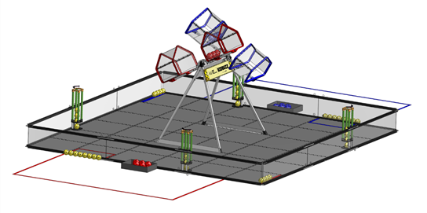
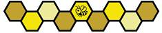

Em BIOBUZZ ™ apresentado por RTX, 2 competindo ALLIANCES de 2 equipes cada coletar POLLEN e NECTAR, LAUNCHING eles em seu HIVE e colocá-los em FLOWERS.
Durante os primeiros 30 segundos do MATCH, o ROBOTS opera de forma autônoma. O ROBOTS pode usar sensores para coletar o POLLEN do FLOWERS e navegar para o LAUNCH no CELLS do seu HIVE. Quando o suficiente SCORING ELEMENTS são LAUNCHED para o CELL, o HIVE vai inclinar. Cada vez que um HIVE é TIPPED, pontos são ganhos, e NECTAR adicional é desbloqueado.
Durante os 2 minutos restantes do MATCH, os humanos DRIVERS assumem o controle do seu ROBOTS. ROBOTS continua a coletar e marcar POLLEN e NECTAR, inclinando seu HIVE para ganhar pontos e desbloquear mais NECTAR.
À medida que o tempo se esgota, ALLIANCES trabalha para preencher FLOWERS com POLLEN e NECTAR. ALLIANCES ganha pontos colocando seu ALLIANCE’S NECTAR em cada FLOWER antes de seu oponente. Os ALLIANCES também ganham pontos por possuir um FLOWER se seu NECTAR é o mais alto colocado em um FLOWER.
O ALLIANCE que ganha mais pontos ganha o MATCH e RANKING POINTS adicional pode ser ganho completando outras conquistas de pontuação.
